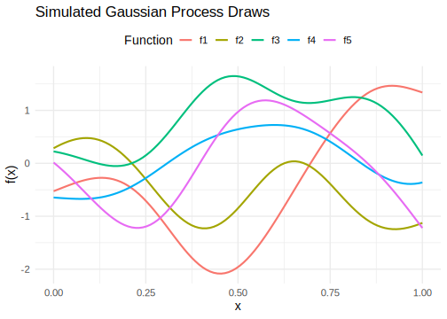
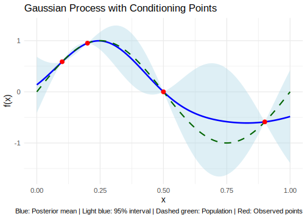
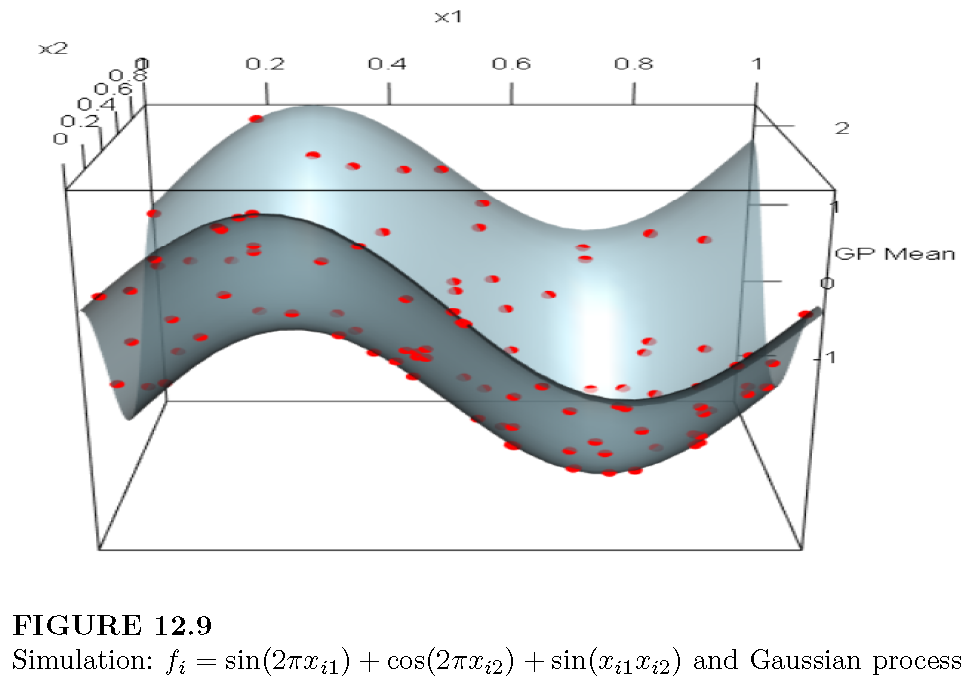

12.4 Gaussian processes
A Gaussian Process (GP) is an infinite collection of random variables, any finite subset of which follows a joint Gaussian distribution. A GP is fully specified by its mean function and covariance function, that is,
\[ f(\mathbf{x}) \sim \text{GP}(m(\mathbf{x}), k(\mathbf{x}, \mathbf{x}')), \]
where \(m(\mathbf{x}) = \mathbb{E}[f(\mathbf{x})]\) and \(k(\mathbf{x}, \mathbf{x}') = \mathbb{E}[(f(\mathbf{x}) - m(\mathbf{x}))(f(\mathbf{x}') - m(\mathbf{x}'))]\).
It is common to assume \(m(\mathbf{x}) = 0\) to simplify calculations, although this is not required.
Perhaps the most commonly used covariance function in Gaussian Processes is the squared exponential kernel (or radial basis function) (Jacobi et al. 2024), defined as
\[ k(\mathbf{x}, \mathbf{x}') = \sigma_f^2 \exp\left(-\frac{1}{2l^2} \|\mathbf{x} - \mathbf{x}'\|^2\right), \]
where \(\sigma_f^2\) is the signal variance, which controls the vertical variation (amplitude) of the function, \(l\) is the length-scale parameter, which determines how quickly the function varies with features distance, and \(\|\mathbf{x} - \mathbf{x}'\|^2\) is the squared Euclidean distance between the feature vectors \(\mathbf{x}\) and \(\mathbf{x}'\).
The squared exponential kernel implies that the function is infinitely differentiable, leading to very smooth function draws. While this smoothness may be desirable in some applications, it can be too restrictive in others. Alternative kernels like the Matérn class allow for more flexibility by controlling the degree of differentiability (Rasmussen and Williams 2006).
A GP can be interpreted as a prior distribution over a space of functions. The starting point in working with GPs is the specification of this prior before any data are observed. The following code illustrates five sample paths drawn from a GP with a squared exponential kernel, assuming a signal variance \(\sigma_f^2 = 1\) and a length-scale \(l = 0.2\), evaluated over a grid of input values \(x \in [0,1]\). A small jitter term is added to the covariance matrix to ensure numerical stability during simulation. The following figure displays the five realizations drawn from the Gaussian Process.
####### Gaussian Process #######
rm(list = ls())
set.seed(10101)
library(ggplot2); library(dplyr)
library(tidyr); library(MASS)
# Simulation setup
n <- 100
x <- seq(0, 1, length.out = n)
sigma_f <- 1
l <- 0.2
sigma_n <- 1e-8
# Squared Exponential Kernel function
SE_kernel <- function(x1, x2, sigma_f, l) {
outer(x1, x2, function(a, b) sigma_f^2 * exp(-0.5 * (a - b)^2 / l^2))
}
K <- SE_kernel(x, x, sigma_f, l) + diag(sigma_n, n)
samples <- mvrnorm(n = 5, mu = rep(0, n), Sigma = K)
# Transpose and rename columns to f1, f2, ..., f5
samples_t <- t(samples)
colnames(samples_t) <- paste0("f", 1:5)
# Convert to tidy data frame
df <- data.frame(x = x, samples_t) |>
pivot_longer(cols = -x, names_to = "draw", values_to = "value")
# Plot
ggplot(df, aes(x = x, y = value, color = draw)) + geom_line(linewidth = 1) +
labs( title = "Simulated Gaussian Process Draws", x = "x", y = "f(x)", color = "Function" ) + theme_minimal(base_size = 14) + theme(legend.position = "top")
Thus, for any finite set of feature points \(\mathbf{x}_1, \mathbf{x}_2, \dots, \mathbf{x}_N\), the corresponding function values follow a multivariate Gaussian distribution:
\[ \mathbf{f} = \begin{bmatrix} f(\mathbf{x}_1) \\ f(\mathbf{x}_2) \\ \vdots \\ f(\mathbf{x}_N) \end{bmatrix} \sim \mathcal{N}(\mathbf{0}, \mathbf{K}(\mathbf{X}, \mathbf{X})), \]
where the \((i,j)\)-th entry of the covariance matrix \(\mathbf{K}(\mathbf{X}, \mathbf{X})\) is given by \(\mathbf{K}_{ij} = k(\mathbf{x}_i, \mathbf{x}_j)\).
If we are interested in the properties of a function evaluated at a finite set of input points \(\{(f_i, x_i)\}_{i=1}^N\), inference can be performed using only those points, effectively disregarding the uncountably infinite values the function may take elsewhere.
The following code illustrates how to perform inference for a GP given four observed points \(\{(f_i, x_i)\}_{i=1}^4\), assuming that the true underlying process is
\[ f_i = \sin(2\pi x_i). \]
The inference is based on the properties of the conditional Gaussian distribution (see below). The figure shows that the posterior mean (solid blue line) interpolates the observed points (red dots). Moreover, the level of uncertainty (light blue shaded area) increases in regions that are farther from the observed inputs, where the posterior mean tends to deviate more from the true underlying function (dashed green line).
In situations where the input locations can be selected, such as in experimental designs, active learning strategies can be employed to choose the points that minimize predictive uncertainty. This is typically achieved by optimizing an acquisition function that quantifies the expected informativeness of candidate locations (Settles 2012).
Consequently, GPs play a central role in Bayesian optimization, a stochastic method for finding the maximum of expensive or unknown objective functions. In this approach, a prior is placed over the objective function, which is then updated using observed data to form a posterior distribution over possible functions. This posterior guides the selection of new input points by balancing exploration and exploitation through the acquisition function (Brochu, Cora, and Freitas 2010).
####### Gaussian Process #######
rm(list = ls()); set.seed(10101)
library(ggplot2); library(MASS)
# Define the squared exponential kernel
SE_kernel <- function(x1, x2, sigma_f, l) {
outer(x1, x2, function(a, b) sigma_f^2 * exp(-0.5 * (a - b)^2 / l^2))
}
# Define the input space and observed points
x_star <- seq(0, 1, length.out = 200)
x0 <- c(0.1, 0.2, 0.5, 0.9)
y0 <- sin(2 * pi * x0)
# Hyperparameters
sigma_f <- 1
l <- 0.2
sigma_n <- 1e-8 # Jitter term for stability
# Compute covariance matrices
K_x0x0 <- SE_kernel(x0, x0, sigma_f, l) + diag(sigma_n, length(x0))
K_xstarx0 <- SE_kernel(x_star, x0, sigma_f, l)
K_xstarxstar <- SE_kernel(x_star, x_star, sigma_f, l) + diag(sigma_n, length(x_star))
# Compute posterior mean and covariance
K_inv <- solve(K_x0x0)
posterior_mean <- K_xstarx0 %*% K_inv %*% y0
posterior_cov <- K_xstarxstar - K_xstarx0 %*% K_inv %*% t(K_xstarx0)
# Sample from the posterior
sample_draw <- sin(2 * pi * x_star)
# Compute 95% intervals
posterior_sd <- sqrt(diag(posterior_cov))
lower <- posterior_mean - 1.96 * posterior_sd
upper <- posterior_mean + 1.96 * posterior_sd
# Data frame for plotting
df <- data.frame(
x = x_star,
mean = posterior_mean,
lower = lower,
upper = upper,
sample = sample_draw
)
obs <- data.frame(x = x0, y = y0)
# Plot
ggplot(df, aes(x = x)) + geom_ribbon(aes(ymin = lower, ymax = upper), fill = "lightblue", alpha = 0.4) + geom_line(aes(y = mean), color = "blue", linewidth = 1.2) + geom_line(aes(y = sample), color = "darkgreen", linewidth = 1, linetype = "dashed") + geom_point(data = obs, aes(x = x, y = y), color = "red", size = 3) + labs( title = "Gaussian Process with Conditioning Points", x = "x", y = "f(x)", caption = "Blue: Posterior mean | Light blue: 95% interval | Dashed green: Population | Red: Observed points" ) + theme_minimal(base_size = 14)
In practice, we have an observed dataset \(\{(y_i, \mathbf{x}_i)\}_{i=1}^N\) such that
\[ y_i = f(\mathbf{x}_i) + \mu_i, \]
where \(\mu_i \overset{\text{i.i.d.}}{\sim} \mathcal{N}(0, \sigma^2)\). This means that \(y_i\) is a noisy observation of \(f(\mathbf{x}_i)\).
Thus, the marginal distribution of the observed outputs is
\[ \mathbf{y} \sim \mathcal{N}(\mathbf{0}, \mathbf{K}(\mathbf{X}, \mathbf{X}) + \sigma^2 \mathbf{I}_N), \]
where \(\mathbf{K}(\mathbf{X}, \mathbf{X})\) is the covariance matrix generated by the GP kernel evaluated at the training inputs.
Note that this implies the log marginal likelihood is given by
\[ \log p(\mathbf{y} \mid \mathbf{X}) = -\frac{1}{2} \mathbf{y}^{\top} (\mathbf{K} + \sigma^2 \mathbf{I}_N)^{-1} \mathbf{y} - \frac{1}{2} \log \left| \mathbf{K} + \sigma^2 \mathbf{I}_N \right| - \frac{N}{2} \log 2\pi. \]
We can adopt an empirical Bayes approach to estimate the hyperparameters of the GP prior by maximizing the log marginal likelihood with respect to the kernel parameters (e.g., \(\sigma_f^2\), \(l\)) and the noise variance \(\sigma^2\).
To make predictions at a new set of features \(\mathbf{X}_*\), we consider the joint distribution:
\[ \begin{bmatrix} \mathbf{y} \\ \mathbf{f}_* \end{bmatrix} \sim \mathcal{N}\left( \mathbf{0}, \begin{bmatrix} \mathbf{K}(\mathbf{X}, \mathbf{X}) + \sigma^2 \mathbf{I}_N & \mathbf{K}(\mathbf{X}, \mathbf{X}_*) \\ \mathbf{K}(\mathbf{X}_*, \mathbf{X}) & \mathbf{K}(\mathbf{X}_*, \mathbf{X}_*) \end{bmatrix} \right). \]
Using the conditional distribution of a multivariate Gaussian, the posterior predictive distribution (Rasmussen and Williams 2006) is:
\[ \mathbf{f}_* \mid \mathbf{y} \sim \mathcal{N}(\bar{\mathbf{f}}_*, \operatorname{cov}(\mathbf{f}_*)), \]
where
\[ \begin{aligned} \bar{\mathbf{f}}_* &= \mathbb{E}[\mathbf{f}_* \mid \mathbf{y}, \mathbf{X}, \mathbf{X}_*] = \mathbf{K}(\mathbf{X}_*, \mathbf{X}) [\mathbf{K}(\mathbf{X}, \mathbf{X}) + \sigma^2 \mathbf{I}_N]^{-1} \mathbf{y}, \\ \operatorname{cov}(\mathbf{f}_*) &= \mathbf{K}(\mathbf{X}_*, \mathbf{X}_*) - \mathbf{K}(\mathbf{X}_*, \mathbf{X}) [\mathbf{K}(\mathbf{X}, \mathbf{X}) + \sigma^2 \mathbf{I}_N]^{-1} \mathbf{K}(\mathbf{X}, \mathbf{X}_*). \end{aligned} \]
Therefore, Gaussian Process (GP) regression provides a flexible and efficient nonparametric framework for predicting unobserved responses, with accuracy that improves as more data become available. GPs are widely used due to their favorable computational properties, including the availability of closed-form expressions, and posterior consistency under mild conditions (Choi and Schervish 2007; Stuart and Teckentrup 2018). Moreover, predictive performance can be further enhanced by incorporating derivative information, as the derivative of a GP is itself a GP (Solak et al. 2003; Jacobi et al. 2024).
However, a major limitation of GPs is the need to invert an \(N \times N\) covariance matrix, which requires \(O(N^3)\) computational operations, making them computationally expensive for large datasets. To address this, several scalable methods have been proposed that reduce the computational burden. For instance, Wilson and Nickisch (2015), Gardner et al. (2018) and Pleiss et al. (2018) develop algorithms that reduce complexity to \(O(N)\).
Example: Simulation exercise to study GP performance
We simulate the process
\[ f_i = \sin(2\pi x_{i1}) + \cos(2\pi x_{i2}) + \sin(x_{i1} x_{i2}), \]
where \(x_{i1}\) and \(x_{i2}\) are independently drawn from a uniform distribution on the interval \([0, 1]\), for \(i = 1, 2, \dots, 100\).
We use the DiceKriging package in R to estimate and make predictions using a Gaussian Process. This package applies maximum likelihood estimation to infer the length-scale parameters (\(l_k\)) and the signal variance (\(\sigma_f^2\)). Note that there are two separate length-scale parameters, one for each input variable.
The following code illustrates how to carry out this example, and the following figure displays a 3D plot with the observed points and the posterior mean surface. The package also provides pointwise credible intervals for the predictions.
####### Gaussian Process #######
# Load required packages
library(DiceKriging); library(rgl)
# Simulate training data
set.seed(10101); n_train <- 100
x1 <- runif(n_train); x2 <- runif(n_train)
X_train <- data.frame(x1 = x1, x2 = x2)
# True function without noise
f_train <- sin(2 * pi * X_train$x1) + cos(2 * pi * X_train$x2) + sin(X_train$x1 * X_train$x2)
# Fit Gaussian Process
fit_km <- km(design = X_train, response = f_train, covtype = "gauss", nugget = 1e-10)##
## optimisation start
## ------------------
## * estimation method : MLE
## * optimisation method : BFGS
## * analytical gradient : used
## * trend model : ~1
## * covariance model :
## - type : gauss
## - nugget : 1e-10
## - parameters lower bounds : 1e-10 1e-10
## - parameters upper bounds : 1.958963 1.986954
## - variance bounds : 0.08882249 11.58394
## - best initial criterion value(s) : 245.853
##
## N = 3, M = 5 machine precision = 2.22045e-16
## At X0, 0 variables are exactly at the bounds
## At iterate 0 f= -245.85 |proj g|= 1.8198
## At iterate 1 f = -507.42 |proj g|= 10.555
## At iterate 2 f = -554.97 |proj g|= 10.565
## At iterate 3 f = -559.13 |proj g|= 10.573
## At iterate 4 f = -559.52 |proj g|= 10.566
## At iterate 5 f = -559.71 |proj g|= 10.562
## At iterate 6 f = -561.14 |proj g|= 10.514
## At iterate 7 f = -563.7 |proj g|= 10.4
## At iterate 8 f = -568.91 |proj g|= 10.123
## At iterate 9 f = -576.93 |proj g|= 9.622
## At iterate 10 f = -578.62 |proj g|= 6.2251
## At iterate 11 f = -588.79 |proj g|= 6.5073
## At iterate 12 f = -593.65 |proj g|= 6.2906
## At iterate 13 f = -596.53 |proj g|= 4.235
## At iterate 14 f = -600.42 |proj g|= 2.3681
## At iterate 15 f = -601.07 |proj g|= 1.616
## At iterate 16 f = -603.31 |proj g|= 1.4519
## At iterate 17 f = -605.28 |proj g|= 0.52334
## At iterate 18 f = -605.49 |proj g|= 1.4752
## At iterate 19 f = -605.57 |proj g|= 1.4721
## At iterate 20 f = -605.57 |proj g|= 0.1007
## At iterate 21 f = -605.57 |proj g|= 0.013566
## At iterate 22 f = -605.57 |proj g|= 0.0006761
## At iterate 23 f = -605.57 |proj g|= 0.0012742
## Bad direction in the line search;
## refresh the lbfgs memory and restart the iteration.
## At iterate 24 f = -605.57 |proj g|= 0.00016589
## At iterate 25 f = -605.57 |proj g|= 0.00016589
##
## iterations 25
## function evaluations 62
## segments explored during Cauchy searches 28
## BFGS updates skipped 0
## active bounds at final generalized Cauchy point 1
## norm of the final projected gradient 0.000165894
## final function value -605.575
##
## F = -605.575
## final value -605.574558
## converged# Prediction grid
grid_points <- 30
x1_seq <- seq(0, 1, length.out = grid_points)
x2_seq <- seq(0, 1, length.out = grid_points)
grid <- expand.grid(x1 = x1_seq, x2 = x2_seq)
# Predict GP surface
pred <- predict(fit_km, newdata = grid, type = "UK")
z_pred <- matrix(pred$mean, nrow = grid_points, ncol = grid_points)
# Plot
persp3d(x = x1_seq, y = x2_seq, z = z_pred,
col = "lightblue", alpha = 0.7,
xlab = "x1", ylab = "x2", zlab = "GP Mean")
points3d(x = X_train$x1, y = X_train$x2, z = f_train, col = "red", size = 8)
fit_km@covariance@range.val # length-scale## [1] 0.5196972 0.5150810## [1] 11.58394
A limitation of the DiceKriging package is that it is designed for deterministic simulations and, consequently, does not estimate the noise variance. Therefore, in Exercise 7, we ask to simulate the process
\[ f_i = \sin(2\pi x_{i1}) + \cos(2\pi x_{i2}) + \sin(x_{i1} x_{i2}) + \mu_i, \]
where \(\mu_i \overset{\text{i.i.d.}}{\sim} \mathcal{N}(0, 0.1^2)\), and to use an empirical Bayes approach to estimate the hyperparameters. These estimated hyperparameters should then be used to perform GP prediction.